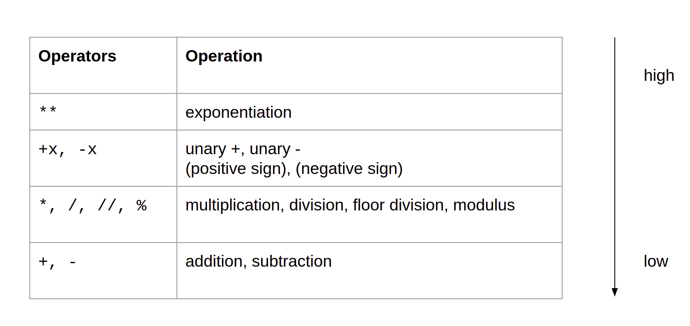
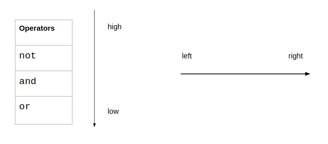
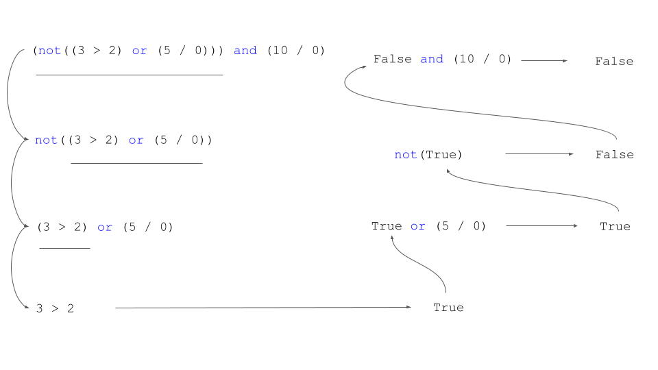

Lesson-1.3Arithmetic ExpressionsPrecedenceOrderBoolean expressionsPrecedence and Order1 is True, 0 is FalseBeware of float!Short Circuit EvaluationActivity Questions
Let us start looking at arithmetic expressions that involve multiple operators:
xxxxxxxxxx21>>> 4 // 2 - 121We can interpret this statement in two ways:
(4 // 2) - 1 = 2 - 1 = 14 // (2 - 1) = 4 // 1 = 4Clearly, we see that the interpreter is following the first way. When an expression has different operators, the interpreter has to make a decision about the way the expression is to be parenthesized, i.e., which operator takes precedence over the others. From the above example, we see that the floor division operator (//) has greater precedence than the subtraction operator (-).
In general, the following table describes the precedence rules for operators. Those with higher precedence come at the top of the table. Operators in a given cell have the same precedence. For example, + and - have same precedence.

Let us take another example:
xxxxxxxxxx21>>> 3 ** 2 * 4 - 4232Going by the precedence rules, we apply the parenthesis in the following sequence:
(3 ** 2) * 4 - 4((3 ** 2) * 4) - 4This is evaluated as: ((3 ** 2) * 4) - 4 = (9 * 4) - 4 = 36 - 4 = 32
Consider the following example:
xxxxxxxxxx21>>> 3 - 2 + 122We can interpret this statement in two ways:
(3 - 2) + 1 = 1 + 1 = 23 - (2 + 1) = 3 - 3 = 0. The interpreter is following the first way. Does this mean that subtraction has greater precedence than addition? No, we just saw that they have the same precedence! We have to be careful here. Python evaluates expressions from left to right. There are two exceptions to this rule, the ** and = operator, both of which are evaluated from right to left. We shall return to this in a while.
Now for another example. Consider the following expression:
xxxxxxxxxx21>>> 4 - 3 - 120The two ways of doing this are:
(4 - 3) - 1 = 1 - 1 = 04 - (3 - 1) = 4 - 2 = 2The first way is the one followed by the interpreter. Going back to the evaluation order followed by Python, we see that this expression is evaluated from left to right.
Let us take another example:
xxxxxxxxxx21>>> 8 % 4 % 220Run the following code in the interpreter. Which of the following parenthesizations matches the expression given above? This is left as an exercise for you to try out.
xxxxxxxxxx21>>> (8 % 4) % 22>>> 8 % (4 % 2)Finally, ** is a unique operator in this regard:
xxxxxxxxxx21>>> 2 ** 3 ** 022The two ways of doing this are:
(2 ** 3) ** 02 ** (3 ** 0)The interpreter is following the second way, i.e., the statement is being executed from right to left. This kind of execution happens only in the case of the exponentiation operator and the assignment operator.
The simplest example of an expression that results in a boolean value is given below:
xxxxxxxxxx41>>> 1 > 02True3>>> type(1 > 0)4<class 'bool'>The following expression conveys the fact that 3.14 lies between 3 and 4:
xxxxxxxxxx21>>> 3 < 3.14 and 4 > 3.142TrueThis can also be written in the following manner:
xxxxxxxxxx21>>> 3 < 3.14 < 42TrueLet us add some boolean literals into the mix:
xxxxxxxxxx21>>> 10 > 20 or True2TrueAs an exercise, try the following:
xxxxxxxxxx11>>> False or False or False or False or True
Similar to arithmetic operators, logical operators also have precedence. As we have seen before, expressions are also going to evaluated from left to right:

To see this rule in action, consider the following example:
xxxxxxxxxx21>>> not True and False2FalseThere are two different parenthesizations:
not(True) and False = False and False = Falsenot(True and False) = not(False) = TrueClearly, the interpreter is following the first parenthesization. This is in accordance with the precedence rule for logical operators. The evaluation order is from left to right. But we will return to this in more detail in the section on short circuit evaluation. Another example, this time with and and or:
xxxxxxxxxx21>>> True or False and False2TrueThere are two different parenthesizations:
(True or False) and False = True and False = FalseTrue or (False and False) = True or False = TrueAccording to the precedence rules, and has greater precedence than or. So, the second way is the one followed by Python.
Execute the following statements in the interpreter and observe the output:
xxxxxxxxxx121>>> 1 == True2True3>>> 0 == False4True5>>> 10 == True6False7>>> 10 == False8False9>>> not(1)10False11>>> not(0)12TrueIn Python, the integer 1 stands for True and 0 stands for False.
float!Execute the following expression in the interpreter:
xxxxxxxxxx21>>> 10.00000000000000000000001 > 102FalseThis seems surprising! 10.00000000000000000000001 > 10 is a perfectly valid mathematical statement that evaluates to True. The reason this returns False in Python has to do with the way floating point numbers are represented. Python, and programming languages in general, do not support arbitrary precision for representing real numbers. When the number cannot be represented exactly, an approximate value is returned. As a result of this behaviour, we should be careful when using float values in expressions that involve comparisons. Another example:
xxxxxxxxxx41>>> 0.1 ** 100 == 0.02False3>>> 0.1 ** 1000 == 0.04TrueThe above expression presents a typical case of approximation when dealing with float. The number 0.1 ** 1000 is extremely small. So, the interpreter is going to represent that as 0. One more example follows:
xxxxxxxxxx21>>> 0.1 * 3 == 0.32FalseLet us see what is happening here by starting with the expression to the left of the == operator:
xxxxxxxxxx21>>> 0.1 * 320.30000000000000004Note: The following explanation can be skipped.
The problem is with the way 0.1 is represented in binary - it has a non-terminating, recurring sequence of bits after the decimal point. As the computer uses a finite number of bits to represent data, this sequence will be truncated at some stage. This results in an approximate representation of 0.1. For a more detailed explanation, refer to this resource.
Now, we come to an important feature in Python. Execute the following expression in the interpreter:
xxxxxxxxxx41>>> 1 / 02Traceback (most recent call last):3 File "<stdin>", line 1, in <module>4ZeroDivisionError: division by zeroDivision by zero is not allowed, and the interpreter promptly hits back with an error message. This is not surprising. But what is surprising is the following statement:
xxxxxxxxxx21>>> True or (1 / 0)2TrueNo error message! How do we explain this behaviour?
The expression is evaluated from left to right. The operator is or. Since the operand on the left is True, the whole expression will evaluate to True irrespective of the operand on the right. So, the interpreter skips evaluating the operand on the right. This behaviour is called short circuit evaluation.
Consider a more complex example:
xxxxxxxxxx21>>> (not((3 > 2) or (5 / 0))) and (10 / 0)2FalseLet us break this down using the diagram given below. The arrows on the left give us an idea of the expression that has to be evaluated first. If we keep following the arrows, the last expression in this image on the bottom-left is the first to be evaluated. By following the arrows on the right, we can see that the two offending expressions - 5 / 0 and 10 / 0 - are never evaluated.

xxxxxxxxxx81>>> 4 % 22>>> type(4 % 2)3>>> 4. % 24>>> type(4. % 2)5>>> 4 % 2.6>>> type(4 % 2.)7>>> 4. % 2.8>>> type(4. % 2.)xxxxxxxxxx51>>> 5 - 32>>> 5 - - 33>>> 5 - - - 34>>> 5 - - - - 35>>> 5 - - - - - 3xxxxxxxxxx41>>> 1 + + + 22>>> 1 - - - 23>>> 1 * * * 24>>> 1 / / / 2xxxxxxxxxx11>>> 2 ** 2 - 2 - 2 / 2xxxxxxxxxx11>>> 3 * 2 / 2 % 0.5 ** - 1xxxxxxxxxx61>>> 1 and 12>>> 1 and 03>>> 1 and True4>>> 1 or True5>>> 0 and False6>>> 0 or Falsexxxxxxxxxx31>>> True + False2>>> True * 33>>> True / 5xxxxxxxxxx11>>> 0 == 0 < 1 < 2 < 3 > 2 > 1 > 0 == 0E_1, E_2, ..., E_n be boolean expressions. The following expression is executed in the interpreter. All operators are and.xxxxxxxxxx21>>> E_1 and E_2 and E_3 ... and ... E_n2TrueHow many expressions are evaluated in the process?
E_1, E_2, ..., E_n be boolean expressions. The following expression is executed in the interpreter. All operators are or.xxxxxxxxxx21>>> E_1 or E_2 or E_3 ... or ... E_n2TrueIf the number of expressions evaluated is equal to , what is the range of ?